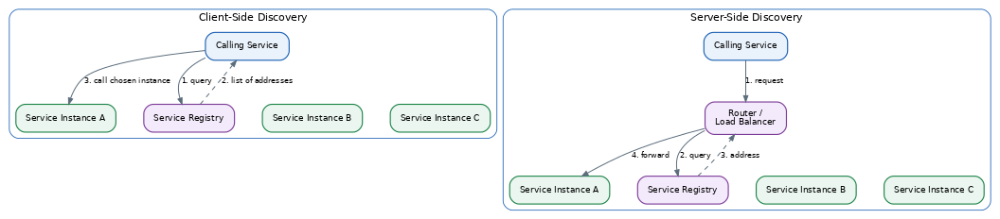
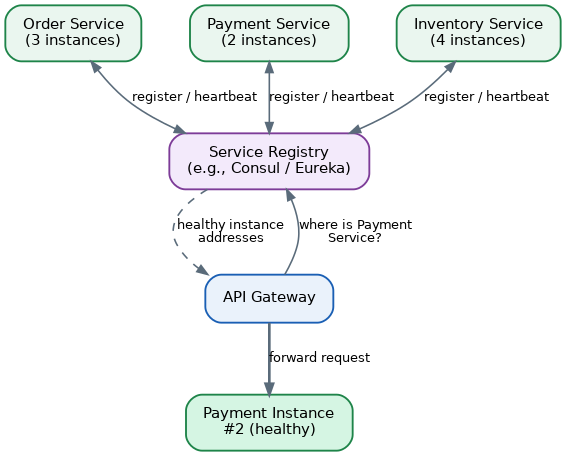

Service Discovery Pattern
Table of Contents
- Overview
- The Problem: Service Coordination in Distributed Systems
- Service Discovery: A Solution
- The Architecture
- The Inner Workings
- An Example: Netflix Eureka with Client-Side Discovery
- Performance Implications and Special Considerations
- System Design Examples
- Security Considerations
- Common Interview Questions
- Key Takeaways
Overview
Service discovery is the mechanism that lets one service in a microservices system automatically find the current network address — the IP address and port — of another service it needs to call, without a human hand-typing that address into a configuration file. It behaves like an always-up-to-date directory-assistance service: rather than memorizing every phone number, you look one up right before you dial and you always get a working line. That may sound like a minor convenience, but it becomes essential in modern cloud and container environments, where the "phone numbers" of services are constantly in flux — a service might run as ten instances one moment and five the next after an autoscaling event, and each instance can be assigned a brand-new address every time it restarts. Without an automatic directory to consult, tracking all of this by hand simply doesn't scale.
This page walks through the pattern as covered in the Software Architecture study guide.
The Problem: Service Coordination in Distributed Systems
Inside a single monolithic application, one piece of code calling another is just a normal in-process function call — there's no network address to worry about because everything runs in the same process. The moment an application is split into independently deployed microservices running on separate machines or containers, every call between services becomes a real network call, and something has to know which actual host, and which port on it, is currently running the service being called.
In an older-style data center this used to be manageable, because servers were fixed physical machines whose addresses rarely changed. Modern microservices, however, typically run inside virtual machines or containers managed by an orchestrator, which assigns IP addresses dynamically, and autoscaling continuously adds or removes instances in response to real-time traffic — meaning the exact set of available instances for any given service can be different from one minute to the next. Picture an Order service that runs three instances during quiet hours but automatically scales to ten during a big sale and then back down afterward: each instance, especially the newly created ones, gets an address that isn't known in advance. If every caller of the Order service relied on a fixed, hardcoded list of addresses, that list would break constantly, and manually updating configuration across a system with dozens of services and hundreds of instances simply does not scale.
Service Discovery: A Solution
The Service Discovery pattern solves this by introducing a service registry — a live, continuously updated database that tracks every currently running service instance and its current network address. Instead of using a hardcoded address, a caller asks the registry "where can I currently find the Order service?" and gets back one or more valid, currently working addresses.
There are two common ways to consume the registry once it exists: client-side discovery, where the calling service itself queries the registry and picks which instance to call, and server-side discovery, where the calling service instead talks to a router or load balancer at a fixed, well-known address, and that router performs the registry lookup on the caller's behalf.
Getting instances into the registry in the first place — registration — also happens in one of two ways. With self-registration, each instance announces itself to the registry on startup and removes itself on graceful shutdown. With third-party registration, a separate helper component — often built into the deployment platform itself, such as a container orchestrator — watches for instances starting and stopping and handles registering and deregistering them automatically, so the service's own code never has to know the registry exists.
The Architecture
Four components typically appear in a service discovery architecture: the service instances themselves, the service registry that tracks them, the calling client or router acting on its behalf, and a health-checking mechanism that keeps the registry honest by removing instances that have stopped responding correctly.
In client-side discovery, the calling service's own code — often with help from a shared library — directly queries the registry to get back a list of currently healthy instance addresses, then applies its own load-balancing logic (such as simple round-robin) to pick which instance to call. The well-known real-world example is Netflix's combination of Eureka (the service registry) and Ribbon (the client-side load-balancing library that picks an instance once Eureka has returned the list).
In server-side discovery, the calling service doesn't talk to the registry at all — it simply sends its request to a fixed, well-known router or load balancer address, and that router queries the registry and forwards the request to a chosen healthy instance. Common examples include a cloud load balancer such as AWS's Elastic Load Balancer, which tracks healthy instances automatically, or a Kubernetes Service, where an internal proxy and DNS layer transparently route a request to one of the matching pods.

The Inner Workings
When a new instance starts up, the first thing that happens is registration: its network address, along with useful metadata like service name and version, gets recorded in the registry — either by the instance announcing itself, or by an external agent noticing the new instance has appeared.
Because instances can crash unexpectedly without the chance to announce a clean shutdown, registries rely on ongoing health checks to stay accurate. This typically works through periodic heartbeats: the registry (or a helper agent) regularly asks each instance "are you still healthy?" via a small health-check endpoint, and if an instance misses enough checks in a row, the registry assumes it's no longer usable and automatically removes it — no human intervention required. When an instance shuts down gracefully, it typically deregisters itself as one of its last actions, which is faster and cleaner than waiting for a health check to eventually time out.
To avoid overwhelming the registry with a constant stream of lookups, and to avoid the latency of a network round trip on every call, clients commonly cache the instance list for a short period, refreshing it periodically in the background rather than asking the registry before every single request.
An Example: Netflix Eureka with Client-Side Discovery
Suppose a company runs an Order service and a Payment service, using Netflix's Eureka registry with client-side discovery:
- A new instance of the Order service starts up and registers itself with the Eureka server, providing its logical name ("ORDER-SERVICE") along with its current host and port.
- Later, the Payment service needs to call the Order service to check an order's status.
- Rather than using a hardcoded address, the Payment service's client-side discovery library asks its locally cached copy of the registry information (refreshed periodically from Eureka) for the current list of healthy Order service instances.
- A load-balancing component — in this case Netflix's Ribbon library — picks one instance from that list, for example using simple round-robin selection.
- The Payment service makes its HTTP call directly to that chosen Order service instance's address.
If the Order service later scales up to handle extra load, or one instance crashes and is removed after failing its health checks, the Payment service needs no code change or manual reconfiguration at all — the next time it refreshes its cached list from Eureka, it automatically sees the updated, correct set of instances.
Performance Implications and Special Considerations
Client-side discovery has a performance edge: it involves one less network hop than server-side discovery, since the caller talks directly to the chosen instance rather than through an intermediate router. The trade-off is that the discovery logic — how to query the registry and how to load balance — has to be built or included as a library inside every service, in every programming language used across the organization, adding development and maintenance overhead in a mixed-language ("polyglot") environment.
Server-side discovery keeps individual services simpler, since they just call one fixed router address and never need to know the registry exists at all. The cost is a small amount of extra latency from that additional hop, and the router itself becomes a piece of infrastructure that must be deployed, scaled, and kept highly available, since every request now depends on it.
Because so much of the system depends on the registry being accurate and available, registry outages are a serious risk. A well-built discovery setup makes sure clients keep using their last-known-good cached list of instances if the registry becomes temporarily unreachable, rather than instantly failing every request — a slightly stale list is usually far better than no list at all.
Systems that rely on plain DNS for discovery, such as Kubernetes' internal DNS service, face their own trade-off: DNS answers are often cached by operating systems and libraries for some period of time, so a very short cache time keeps information fresher but generates more lookup traffic, while a longer cache time reduces load but risks briefly sending traffic to an instance that has already disappeared.
Finally, as a system grows to include many services and potentially thousands of instances, the registry's own ability to handle a high volume of registrations, health checks, and lookup queries becomes important. Production-grade registries such as Consul use efficient background protocols — for example a gossip-based protocol for spreading updates between registry nodes — specifically so the registry itself doesn't become a new bottleneck as the system scales.
System Design Examples
In a Kubernetes-based system, individual running copies of a service (pods) sit behind an abstraction called a Service. Kubernetes' built-in DNS component lets any other pod look up a friendly name — for example order-service.default.svc.cluster.local — which resolves to a stable virtual address; traffic sent to that address is transparently load-balanced across whichever pod instances are currently healthy, giving you server-side discovery essentially for free as part of the platform.
In a Consul-based system, each service instance registers itself with a local Consul agent running alongside it, and Consul continuously performs health checks against each registered instance. Other services can then discover healthy instances either through a simple DNS lookup or through Consul's HTTP API, and unhealthy instances are automatically excluded from the results until they recover.

AWS Cloud Map offers a managed, cloud-native version of the same idea: services register their endpoints — IP addresses, ports, or other DNS/HTTP details — into a Cloud Map namespace, and other parts of the application discover them either through a standard DNS lookup or by calling Cloud Map's discovery API directly, without the team needing to run and maintain its own registry software.
Security Considerations
Knowing where to send traffic isn't the same as knowing that traffic is safe, so many teams layer mutual TLS (mTLS) on top of service discovery: both sides of a connection present a certificate to prove their identity, and all traffic between services is encrypted, so that even a misrouted or intercepted request can't be read or forged. This is commonly implemented via a service mesh — a dedicated networking layer such as Consul Connect or Istio — which automatically manages certificates and encrypted connections for every service, typically through small helper processes called sidecar proxies deployed next to each instance.
Beyond encryption, it's good practice to explicitly control which services may call which other services, following a "zero trust" mindset where nothing is trusted by default. Consul supports this through a feature called intentions, and Kubernetes offers similar functionality through network policies — both let a team say "deny all service-to-service traffic by default, then explicitly allow only the specific, expected connections," such as allowing the Payment service to call the Order service while blocking it from ever reaching an internal Admin service it has no legitimate reason to touch. The registry's own management interface and network access need to be locked down like any other sensitive infrastructure — its administrative dashboard and API should generally live on a private network, all communication with it should be encrypted, and any credentials or certificates should be rotated regularly. Finally, keeping an audit log of registrations, deregistrations, and lookups gives a team a way to notice suspicious activity after the fact, such as an unexpected instance suddenly registering under an existing, sensitive service's name.